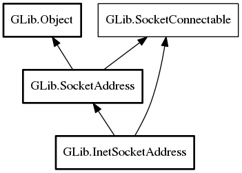

InetSocketAddress
Object Hierarchy:
Description:
An IPv4 or IPv6 socket address; that is, the combination of a InetAddress and a port number.
All known sub-classes:

Namespace: GLib
Package: gio-2.0
Content:
Properties:
Creation methods:
Methods:
Inherited Members:
All known members inherited from class GLib.SocketAddress
All known members inherited from class GLib.Object
All known members inherited from interface GLib.SocketConnectable